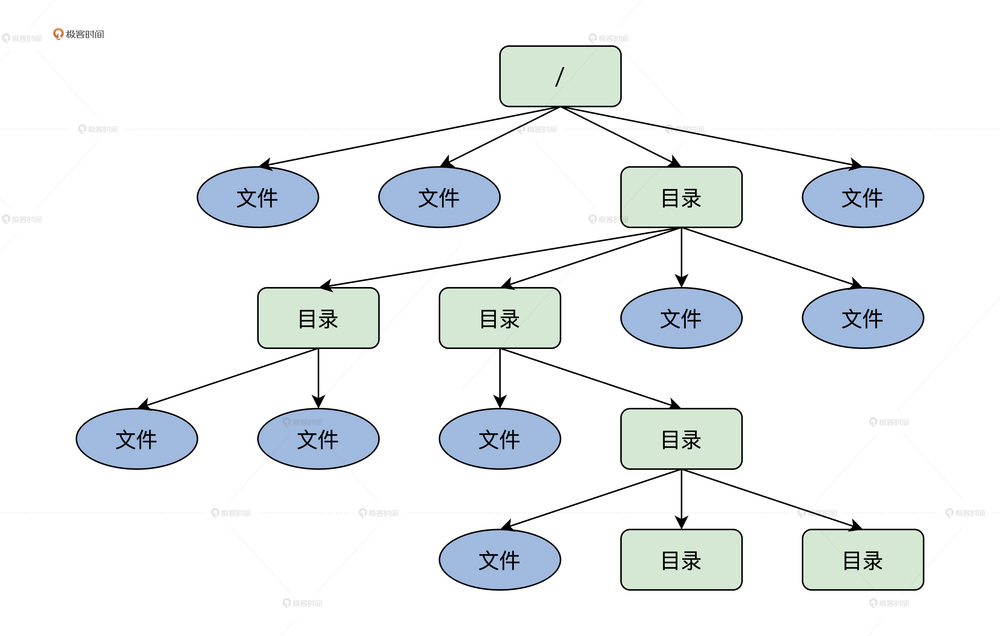

- 00 开篇词 为什么要学写一个操作系统？.md.html
- 00 编辑手记 升级认知，迭代自己的操作系统.md.html
- 01 程序的运行过程：从代码到机器运行.md.html
- 02 几行汇编几行C：实现一个最简单的内核.md.html
- 03 黑盒之中有什么：内核结构与设计.md.html
- 04 震撼的Linux全景图：业界成熟的内核架构长什么样？.md.html
- 05 CPU工作模式：执行程序的三种模式.md.html
- 06 虚幻与真实：程序中的地址如何转换？.md.html
- 07 Cache与内存：程序放在哪儿？.md.html
- 08 锁：并发操作中，解决数据同步的四种方法.md.html
- 09 瞧一瞧Linux：Linux的自旋锁和信号量如何实现？.md.html
- 10 设置工作模式与环境（上）：建立计算机.md.html
- 11 设置工作模式与环境（中）：建造二级引导器.md.html
- 12 设置工作模式与环境（下）：探查和收集信息.md.html
- 13 第一个C函数：如何实现板级初始化？.md.html
- 14 Linux初始化（上）：GRUB与vmlinuz的结构.md.html
- 15 Linux初始化（下）：从_start到第一个进程.md.html
- 16 划分土地（上）：如何划分与组织内存？.md.html
- 17 划分土地（中）：如何实现内存页面初始化？.md.html
- 18 划分土地（下）：如何实现内存页的分配与释放？.md.html
- 19 土地不能浪费：如何管理内存对象？.md.html
- 20 土地需求扩大与保障：如何表示虚拟内存？.md.html
- 21 土地需求扩大与保障：如何分配和释放虚拟内存？.md.html
- 22 瞧一瞧Linux：伙伴系统如何分配内存？.md.html
- 23 瞧一瞧Linux：SLAB如何分配内存？.md.html
- 24 活动的描述：到底什么是进程？.md.html
- 25 多个活动要安排（上）：多进程如何调度？.md.html
- 26 多个活动要安排（下）：如何实现进程的等待与唤醒机制？.md.html
- 27 瞧一瞧Linux：Linux如何实现进程与进程调度_.md.html
- 28 部门分类：如何表示设备类型与设备驱动？.md.html
- 29 部门建立：如何在内核中注册设备？.md.html
- 30 部门响应：设备如何处理内核I_O包？.md.html
- 31 瞧一瞧Linux：如何获取所有设备信息？.md.html
- 32 仓库结构：如何组织文件_.md.html
- 33 仓库划分：文件系统的格式化操作.md.html
- 34 仓库管理：如何实现文件的六大基本操作？.md.html
- 35 瞧一瞧Linux：虚拟文件系统如何管理文件？.md.html
- 36 从URL到网卡：如何全局观察网络数据流动？.md.html
- 37 从内核到应用：网络数据在内核中如何流转.md.html
- 38 从单排到团战：详解操作系统的宏观网络架构.md.html
- 39 瞧一瞧Linux：详解socket实现与网络编程接口.md.html
- 40 瞧一瞧Linux：详解socket的接口实现.md.html
- 41 服务接口：如何搭建沟通桥梁？.md.html
- 42 瞧一瞧Linux：如何实现系统API？.md.html
- 43 虚拟机内核：KVM是什么？.md.html
- 44 容器：如何理解容器的实现机制？.md.html
- 45 ARM新宠：苹果的M1芯片因何而快？.md.html
- 46 AArch64体系：ARM最新编程架构模型剖析.md.html
- LMOS来信：第二季课程带你“手撕”计算机基础.md.html
- 大咖助场 以无法为有法，以无限为有限.md.html
- 用户故事 yiyang：我的上机实验“爬坑指南”.md.html
- 用户故事 成为面向“知识库”的工程师.md.html
- 用户故事 技术人如何做选择，路才越走越宽？.md.html
- 用户故事 操作系统发烧友：看不懂？因为你没动手.md.html
- 用户故事 用好动态调试，助力课程学习.md.html
- 用户故事 艾同学：路虽远，行则将至.md.html
- 结束语 生活可以一地鸡毛，但操作系统却是心中的光.md.html
- 捐赠
32 仓库结构：如何组织文件_
你好，我是LMOS。
你有没有想过，蜜蜂把劳动成果变成蜜糖存放在蜂巢中，人类把劳动成果量化成财富存放在银行，但一个进程的劳动成果放在哪里呢？
看到这里，你可能有疑问，进程有劳动成果吗？当然有，进程加工处理的数据就是进程的劳动成果，可是这个“劳动成果”，如何表示、如何组织，又放在哪里呢？这些问题都会在我们讲解文件系统的过程中一一得到解答。
那今天我们先来搞清楚什么是文件系统，然后解决文件系统如何组织文件，最后对我们文件系统进行设计并抽象成数据结构。好了，下面我们正式开始今天的学习吧。
这节课的配套代码，你可以从这里获取。
什么是文件系统
我们经常在计算机上听APE音乐、看4K视频、阅读各种文档、浏览各种精美的网页，这些东西都是一些特定格式的数据，我们习惯把它们叫做文件，这些文件可能储存在HD机械硬盘、SSD固态硬盘、TF卡，甚至远程计算机上。
所以你可以这样理解，文件系统解决的就是如何把许多文件储存在某一种储存设备上，方便进程对各种文件执行打开、关闭、读写、增加和删除等操作。因为这些操作实际上非常复杂，所以操作系统中分出一个子系统专门处理这些问题，这个系统就叫文件系统。
文件系统的核心现在我们还没法直观地感受到，但是它在上层为用户或者进程提供了一个逻辑视图，也就是目录结构。
下图中就是典型的文件系统逻辑视图，从/（根）目录开始，就能找到每个文件、每个目录和每个目录下的所有文件。我们可以看出目录也是文件的一部分，它也扮演了“组织仓库管理员”的角色，可以对文件进行分层分类，以便用户对众多文件进行管理。

虽然这看上去好像有点复杂、是个技术活，但是别怕，毕竟我们不是干这事的第一批人，可以参考别人的设计与实现。好了，废话不多说，难不难，要做了才知道……
文件系统设计
既然要实现一个文件系统，还是要好好设计一下，我们首先从三个问题出发对文件系统设计方面的思考。
- 文件系统为什么可以是一个设备开始，以及它在整个Cosmos内核中的位置格局？
- 文件数据的格式以及储存介质的最小单位是什么？
- 如何组织越来越多的文件。
搞清楚这三大问题的过程，就是设计文件系统的过程，这里是重点中的重点，你可以停下来好好揣摩，然后再继续往下学习。
文件系统只是一个设备
HD机械硬盘、SSD固态硬盘、U盘、各种TF卡等都属于存储设备，这些设备上的文件储存格式都不相同，甚至同一个硬盘上不同的分区的储存格式也不同。这个储存格式就是相应文件系统在储存设备上组织储存文件的方式。
例如我们经常看到的：FAT32、NTFS、Ext4、Btrfs、ZFS、HPFS等，这些都是不同的文件系统建立的文件系统格式。
看到上面储存设备与文件系统多样性的情况之后，不难发现让文件系统成为Cosmos内核中一部分，是个非常愚蠢的想法。那怎么解决这个困难呢，你可以先自己想一想，然后再参考我后面的分析。
针对前面的困难，我们不难提出这样两点设想：第一，文件系统组件是独立的与内核分开的；第二，操作系统需要动态加载和删除不同的文件系统组件，这样就可以适应复杂的情况了。例如，硬盘上不同的分区有不同的文件系统格式，还可以拔插U盘、TF卡等。
你还记得前面Cosmos内核的设备驱动的设计吗？如果文件系统也是Cosmos内核下的一个设备，那就好办多了，因为不同的设备驱动程序可以动态加载，而且可以建立多个文件系统设备，而对各个文件系统设备驱动程序的实现，就是各个文件系统的实现。
刚好前面的驱动模型中（第30节课），定义了文件系统的设备类型。这个架构我给你画一幅图，你看一下就明白了。

这里我不仅给出了文件系统设备的架构，还简单地梳理了内核中其它组件与文件系统的关系。
如图所示，文件系统下面有诸如U盘、硬盘、SSD、CD、TF卡等储存设备。文件系统一定要有储存设备，这个储存设备可以是硬盘，也可以是TF卡，总之能储存数据的设备就行。
为了减小程序的复杂程度，我们使用一块4MB大小的内存空间来模拟储存设备，何况又不是我们第一次建造内存文件系统（ramfs），只是我们做得更小。在文件系统设备驱动程序的入口函数中，分配4MB大小的内存空间。
相信即使如此，也能让我们清楚地看到文件系统的实现。等哪天有时间了，写好了硬盘驱动程序，也可以让文件系统设备驱动程序处理好了数据，然后发送给硬盘设备驱动程序，让其写入到硬盘中去。
这在我们设计的驱动模型中是完全允许的，这就形成了储存系统的“I/O栈”。
文件格式与储存块
通常说的文件，都是一堆数据，当我们把这堆数据组织成一个文件，储存在储存介质上时，就有了一个问题：我们按什么格式把这些数据存放在储存介质上。
当然，这个格式是指文件系统存放文件数据的格式。文件数据本身的格式，文件系统不该多管，例如MP3、Word文档的内部格式，各不相同。
关于文件系统存放文件数据的格式，类UNIX系统和Windows系统都采用了相同的方案，那就是逻辑上认为一个文件就是一个可以动态增加、减少的线性字节数组，即文件数据的每个字节都一一对应到这个线性数组中的每个元素。
那么我们也和它们一样，我来给你画个图梳理逻辑关系。
图中的文件数据字节数组，终究是逻辑上的，所以问题又来了，我们如何把这个逻辑上的文件数据字节数组，映射到具体的储存设备上呢？只有解决了这个问题，才能真正储存数据。
现在的机械硬盘、SSD固态硬盘、TF卡，它们都是以储存块为单位储存数据的，一个储存块的大小可以是512、1024、2048、4096字节，访问这些储存设备的最小单位也是一个储存块，不像内存设备可以最少访问一个字节。
文件系统把文件数据定义成一个动态的线性字节数组，可是一开始我们不知道这个数组是多大，需要分配多少个物理储存块，最好是把这个动态的线性字节数组分成一个个数据块。
然而，不同的储存设备的物理储存块的大小不同，有的是512字节，而有的是4096字节，我们为了文件系统能工作在不同的储存设备上，所以我们把这里的数据块定义为文件系统逻辑块，其大小为4096字节，最后把这个逻辑块映射到一个或多个物理储存块。
为了让你更好地理解这个过程，我为你准备了一幅图，如下所示。
从这幅图里，我们可以看到从文件这个抽象概念，它是如何一步步从文件字节数组，整合形成文件数据逻辑块，最后映射到储存介质上的物理储存块。你需要先掌握整个演变过程的逻辑，具体怎么实现我们后面继续讲。
如何组织文件
现在PC机上的文件数量都已经上十万的数量级了，网络服务器上更是不止这个数量。
我们不难想到，如果把十万个文件顺序地排列在一起，要找出其中一个文件，那是非常困难的，即使是计算机程序查找起来也是相当慢的，加上硬盘、TF卡之类的储存设备比内存慢得多，因此会变得更慢。
所以，需要一个叫文件目录或者叫文件夹的东西，我们习惯称其为目录。这样我们就可以用不同的目录来归纳不同的文件，例如在MP3目录下存放MP3音乐文件，或者在MP4目录下存放视频文件。同时，目录之下还可以创建目录，这样就建立了非常好的层次关系。
你可能经常在LINUX系统中看到如：“/dev/kvm，/user/bin/gcc”之类的东西，其中dev、user、bin它们就是目录，kvm、gcc它们就是文件，“/”符号就是文件路径分隔符，它们合起来就是文件路径名。
可以看出，整个文件层次结构就像是一棵倒挂的树。前面那幅图已经显示出了这种结构。后面我们的文件系统也会采用目录来组织文件。这里你只要明白，文件数量多了就出现了目录，而目录是用来帮助用户组织或归纳文件的就行了。
文件系统数据结构
一路走来，不难发现操作系统内核的任何组件的实现，都需要设计一套相应的数据结构，文件系统也不例外。
根据前面我们对文件系统的设计，我们至少需要表示文件和目录的数据结构，除此之外，还需要表示文件系统本身的一些数据结构，这些数据结构我们称为文件系统元数据。下面我们先从文件系统元数据开始吧！
设计超级块
一个文件系统有很多重要的信息，例如文件系统标识、版本、状态，储存介质大小，文件系统逻辑储存块大小，位图所在的储存块，还有根目录等。因为这些信息很重要，没有它们就等于没有文件系统，所以包含这些信息的数据结构，就叫做文件系统的超级块或者文件系统描述块。
下面我们就来设计超级块的数据结构，先在cosmos/include/drvinc/目录下建立一个drvrfs_t.h文件，写下rfssublk_t结构，代码如下所示。
typedef struct s_RFSSUBLK
{
spinlock_t rsb_lock;//超级块在内存中使用的自旋锁
uint_t rsb_mgic;//文件系统标识
uint_t rsb_vec;//文件系统版本
uint_t rsb_flg;//标志
uint_t rsb_stus;//状态
size_t rsb_sz;//该数据结构本身的大小
size_t rsb_sblksz;//超级块大小
size_t rsb_dblksz;//文件系统逻辑储存块大小，我们这里用的是4KB
uint_t rsb_bmpbks;//位图的开始逻辑储存块
uint_t rsb_bmpbknr;//位图占用多少个逻辑储存块
uint_t rsb_fsysallblk;//文件系统有多少个逻辑储存块
rfsdir_t rsb_rootdir;//根目录，后面会看到这个数据结构的
}rfssublk_t;
我们文件系统的超级块，保存在储存设备的第一个4KB大小的逻辑储存块中，但是它本身的大小没有4KB，多余的空间用于以后扩展。rfsdir_t数据结构是一个目录数据结构，你先有个印象，后面我们会有介绍的。
当然把根目录数据结构直接放在超级块中，目前也是可行的，反正现在超级块中有多余的空间。
位图
我们把一个储存设备分成一个个逻辑储存块（4KB），当储存一个文件数据时，就按逻辑储存块进行分配。那这就产生了一个新的问题：怎么来标识哪些逻辑储存块是空闲的，哪些逻辑储存块是已经分配占用的呢？
我们可以用位图来解决这个问题，这里的位图，就是利用一块储存空间中所有位的状态，达到映射逻辑储存块状态（是否已分配）的目的。
一个字节是8个位，那么4KB的储存空间中，就有（4096*8）个位，这每个位映射到一个逻辑储存块，其中一个位的值为0，就表示该位对应的逻辑储存块是空闲的，反之就表示对应的逻辑储存块是占用的。
上面的说明如果你还是难以明白，我再画一幅图你就清楚多了，如下所示。

其实位图并不需要定义实际的数据结构，在实际操作时，我们把位图这个储存块当成一个字节数组就行了。这里我们用了一块4MB的内存空间模拟储存设备，所以一共只有1024个4KB大小的逻辑储存块。因为远远小于4096，所以用不着把所有位都利用起来，操作一个个位很麻烦，完全可以用一个字节表示一个逻辑储存块是否空闲还是占用。
文件目录
根据我们的设计，为了方便用户查找和归纳越来越多的文件，才产生了目录。其实从本质上来说，目录也是一种数据，这种数据中包含了目录类型、状态、指向文件数据管理头的块号、名称等信息。
下面我们就动手把这些信息整理成rfsdir_t数据结构，写在drvrfs_t.h文件中，方便以后使用，代码如下所示。
#define DR_NM_MAX (128-(sizeof(uint_t)*3))
#define RDR_NUL_TYPE 0
#define RDR_DIR_TYPE 1
#define RDR_FIL_TYPE 2
#define RDR_DEL_TYPE 5
typedef struct s_RFSDIR
{
uint_t rdr_stus;//目录状态
uint_t rdr_type;//目录类型，可以是空类型、目录类型、文件类型、已删除的类型
uint_t rdr_blknr;//指向文件数据管理头的块号，不像内存可以用指针，只能按块访问
char_t rdr_name[DR_NM_MAX];//名称数组，大小为DR_NM_MAX
}rfsdir_t;
从上面代码中的DR_NM_MAX宏，我们可以看出rfsdir_t数据结构最多只有128字节大小。而名称数组的大小就是128减去3个8字节，由于储存设备不能用字节地址访问，它只能一块一块的访问，所以rfsdir_t结构中有个域，指向文件数据管理头的块号。
为什么rfsdir_t结构中会有很多类型呢？这里要注意，目录也是一种特殊的文件，它里面就是保存着一系列rfsdir_t结构的实例变量。这些rfsdir_t结构再次表明它代表的是一个文件，还是一个目录。
我画个图，你就明白了。如下所示。

上图中可以看到，超级块中的rfsdir_t结构保存了根目录的名称和指向管理根目录数据的文件管理头的块号。而实际的目录数据保存在逻辑储存块中，这表明目录也是一种数据。即一系列的rfsdir_t结构的实例变量。通过这一系列的rfsdir_t结构就能找到根目录下的其它文件和目录了。
文件管理头
文件系统最重要是管理和存放文件。我们平常接触文件，只看到了文件名，但一个文件的信息难道真的只有一个文件名称吗？
显然不是，它还有状态、类型、创建时间、访问时间、大小，更为重要的是要知道该文件使用了哪些逻辑储存块。下面就来把上述所有的文件信息，归纳整理成一个数据结构，写在drvrfs_t.h文件中称为文件管理头，即fimgrhd_t结构，代码如下所示。
#define FBLKS_MAX 32
#define FMD_NUL_TYPE 0
#define FMD_DIR_TYPE 1
#define FMD_FIL_TYPE 2
#define FMD_DEL_TYPE 5//文件管理头也需要表明它管理的是目录文件还是普通文件
typedef struct s_FILBLKS
{
uint_t fb_blkstart;//开始的逻辑储存块号
uint_t fb_blknr;//逻辑储存块的块数，从blkstart开始的连续块数
}filblks_t;
typedef struct s_fimgrhd
{
uint_t fmd_stus;//文件状态
uint_t fmd_type;//文件类型：可以是目录文件、普通文件、空文件、已删除的文件
uint_t fmd_flg;//文件标志
uint_t fmd_sfblk;//文件管理头自身所在的逻辑储存块
uint_t fmd_acss;//文件访问权限
uint_t fmd_newtime;//文件的创建时间，换算成秒
uint_t fmd_acstime;//文件的访问时间，换算成秒
uint_t fmd_fileallbk;//文件一共占用多少个逻辑储存块
uint_t fmd_filesz;//文件大小
uint_t fmd_fileifstbkoff;//文件数据在第一块逻辑储存块中的偏移
uint_t fmd_fileiendbkoff;//文件数据在最后一块逻辑储存块中的偏移
uint_t fmd_curfwritebk;//文件数据当前将要写入的逻辑储存块
uint_t fmd_curfinwbkoff;//文件数据当前将要写入的逻辑储存块中的偏移
filblks_t fmd_fleblk[FBLKS_MAX];//文件占用逻辑储存块的数组，一共32个filblks_t结构
uint_t fmd_linkpblk;//指向文件的上一个文件管理头的逻辑储存块
uint_t fmd_linknblk;//指向文件的下一个文件管理头的逻辑储存块
}fimgrhd_t;
fimgrhd_t结构中，其它的信息都比较易懂，关键是fmd_fleblk数组，它里面的每个元素都保存一片连续的逻辑储存块。
比如一个文件占用：4~8、10~15、30~40的逻辑储存块，那么就在fmd_fleblk[0]中保存4和4，在fmd_fleblk[1]中保存10和5，在fmd_fleblk[2]中保存30和10。
细心的你可以发现，当文件特别大时，fmd_fleblk数组元素可能就不够用了。
但是我们想了一个办法，在fmd_fleblk数组元素用完时，就再分配一个逻辑储存块，在里面再次存放同一个文件的fimgrhd_t结构，让上一个fimgrhd_t结构中的fmd_linknblk域指向这个逻辑储存块，再让这个逻辑储存块中fimgrhd_t结构中的fmd_linkpblk域，指向上一个fimgrhd_t结构所在的逻辑储存块。
为了帮助你梳理思路，我还画了示意图。

从这张图中，我们可以看到fimgrhd_t结构如何管理一个文件占有的所有逻辑储存块，并且可以通过类似链表的形式动态增加fimgrhd_t结构，实际上就是在动态增加文件的逻辑储存块。同时我们不难发现，文件的第一个逻辑储存块的首个512字节空间中，存放的就是fimgrhd_t数据结构。
好了，一个简单的文件系统所需要的所有数据结构就设计完成了，你可能会想，不会这样就完了吧？我们还没写什么代码呢，文件系统就实现了么？别急，怎么写代码实现这个文件系统，下节课我们继续探索……
重点回顾
今天的课程就到这里了，对于文件系统，我们才刚刚开始探索，我把今天的课程重点梳理一下。
1.我们一起了解了什么是文件系统，就是解决如何把许多进程产生的数据——文件，储存在某一种储存设备之上，让进程十分方便就能对各个文件进行相应的操作。
2.我们设计了自己的文件系统，它在Cosmos中就是一个设备，规划了文件系统的文件格式和如何储存文件，还有如何组织多个文件。
3.我们把文件系统设计变成了对应数据结构，它们分别是描述文件系统信息的超级块、解决逻辑储存块分配状态的位图，还有用文件管理的目录和文件管理头。
思考题
请问，我们文件系统的储存单位为什么要自定义一个逻辑储存块？
欢迎你在留言区跟我交流互动，也欢迎你把这节课分享给身边的朋友，跟他一起学习进步。
好，我是LMOS，我们下节课见!
© 2019 - 2023 Liangliang Lee. Powered by gin and hexo-theme-book.